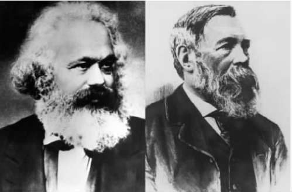

迄今为止我们一直关注的是规范性法律理论，以及这种理论所作的可以说是从法律内部来阐释法律概念的努力。也就是说，规范性法律理论关注法律学说以及规则、概念、原则与法庭和律师在实际法律实践中所运用的其他观念之间的关系。但还存在另一种法律分析的研究路径，它试图通过诉诸现象运行的社会环境来理解这些现象的本质。这种社会学方法对法哲学产生了相当大的影响，虽然这种影响经常不被人承认。
例如，哈特坚持认为官员应“内在地”认可承认规则，并主张应当对作为共同标准的特定行为模式采取一种“批判的反思态度”（参见本书第二章），这与马克斯·韦伯的内在合法性概念（见下文）正相呼应。
法律的社会学阐释通常要依赖三个紧密相连的主张：除非把法律看成是一种“社会现象”，否则无法理解法律；对法律概念的分析只能提供对“运行中的法律”的一种片面解释；法律仅仅是社会控制的一种形式。
尽管社会法学或者法律社会学的起源可上溯至罗斯科·庞德以及欧根·埃利希的开拓性著作，本章主要集中研究的将是社会学理论的两个巨擘——埃米尔·涂尔干和马克斯·韦伯，他们的学说对法理学产生的影响是最深刻的。我也将论述卡尔·马克思对法律和法律制度的思考所产生的影响，同时还要论及两个主要的社会理论家于尔根·哈贝马斯和米歇尔·福柯，他们的著作一直对当代法学理论的某些领域产生着相当大的影响。
涂尔干（1859-1917）所关注的核心问题是使社会集结在一起的是什么。为什么社会不是七零八散的呢？涂尔干的回答指向法律在促进和维持社会凝聚中的关键作用。他指出，当社会从宗教信仰发展到世俗生活、从集体主义发展到个人主义时，法律就变得更加关注补偿而非惩罚。但是，惩罚在表达维系社会连带关系的集体道德态度时履行着一种非常重要的职能。
涂尔干区分了他所谓的机械连带和有机连带。前者存在于简单、同质的社会，这种社会有统一的价值标准，但缺乏任何重要的劳动分工。这些简单的社群往往在本质上是集体的，很少有个人主义存在。然而，在一些高度发达的社会里则存在着劳动的分工，亦即很高程度的依赖共生。这就存在着实质性的区别，并且个人主义取代了集体主义。涂尔干认为，这些形式的社会连带也体现在法律中：把不同类型的法律加以分类，然后你将会发现相应的不同类型的社会连带关系。
在涂尔干看来，犯罪是社会生活中非常正常的一面。他还极富争议性地提出，犯罪是所有健康社会必不可少的一部分。这是因为，犯罪与表现于“集体良知”中的社会价值标准密切相关：一个行为当其违反了这种扎根于人们心灵深处的集体良知时就构成了犯罪。一个行为并不因其是犯罪行为而冒犯了普遍良知，相反，因为这个行为冒犯了普遍良知所以它才是犯罪行为。
刑罚是涂尔干犯罪概念的实质要素：国家通过惩罚那些冒犯国家本身的人来加强这种集体良知。涂尔干把刑罚界定为“社会通过肉体施加的一种逐渐增强的激烈反应，以作用于那些违反了某种行为规则的社会成员”。
涂尔干还说明了刑罚作为社会控制的一种形式为什么在欠发达社会更加强烈。随着社会的发展，刑罚的形式变得不那么暴力和严酷。但由于刑罚是因犯罪而产生的，涂尔干得以从中发现犯罪行为的演变与社会连带形态之间的一种重要关联。
德国社会学家马克斯·韦伯（1864-1920）受过专业的律师培训，并在其一般社会学理论中赋予法律一种核心作用。韦伯对法律类型的分类建立在不同种类的法律思想上，而“理性”是关键所在。以此为基础，韦伯区分了“形式”体系和“实质”体系。这个区分的关键点在于体系“内部自给”的程度。韦伯所说的“内部自给”，是指决策所要求的规则和程序在体系内部是容易知悉的。
图13 原始社会实行残酷的刑罚，比如用火刑烧死犯人。随着社会的进步，涂尔干认为刑罚的残忍程度在降低。
韦伯所作的第二个重要区分是“理性”与“非理性”之间的区别：这些术语描述了“设施”（规则、程序）在体系内适用的方式。因而最高阶段理性的达致是当
此处将简要考察一下韦伯复杂理论中的两个主要而且相关的内容：他对阐明西方社会资本主义发展原因的关注，以及他的合法统治的观念。
关于第一个问题，韦伯试图表明法律只是间接受到经济环境的影响。他认为法律是“相对自治的”，主张“通常看来……法律结构的发展绝非主要由经济因素所决定”。在韦伯看来，法律从根本上 与经济因素相关 ，但并非由其决定 。理性经济行为（“营利行为”和“预算管理”）是资本主义制度的核心，这种理性主义得到了逻辑上形式合理之法律的确定性和可预测性的促进。这种法律的存在推动而非导致了资本主义的发展。
韦伯把形式合理的法律看作资本主义的一个前提条件，因为这种法律提供了必要的确定性和可预测性，这是企业家从事营利事业所必不可少的。在韦伯看来，这种形式合理性的实现要求法律秩序的系统化，而这种系统化是英国法明显缺乏的。
那么，韦伯又如何解释英国资本主义的出现呢？这个问题一直困扰着许多社会学家。对韦伯著作中这个明显的矛盾有三种可能的解释。其一，很明显，虽然英国法缺少罗马法秩序的系统性，但仍然是一种高度形式主义的法律体系。实际上，韦伯把这种形式主义（例如，这种形式主义要求民事诉讼要遵循针对特定民事案件颁布的特定令状的准确严格程序）描述成是非理性的。韦伯声称，正是这种形式主义对法律体系产生了稳定的影响，这种影响在经济市场上产生了一种较大程度的安全和可预测性。
其二，英国法律职业人员在资本主义上升过程中特别集中在伦敦，靠近知名的商业区——金融城。而且，律师通常还充当商人和公司的顾问，这促使他们调整法律以符合其商业客户的利益。
其三，和欧洲大陆的律师同行相比，英国律师界在其教育、培训以及专业化过程中更像手工业行会，导致他们形式主义地对待法律，并受到先例的约束。这就导向了韦伯所说的遵循罗马法的“预防法学”：重点放在草拟文件并设计新的条款以防止将来的诉讼上。由此，律师及其客户（大部分是商业客户）之间便产生出一种非常紧密的关系。换句话说，这种法律实践的特征弥补了法律本身所缺乏的系统性。
因此，韦伯看来的确认为英国尽管缺少法律的体系化，却仍然发展出了一套资本主义经济制度，因为法律体系的其他重要成分促成了这一点，但如果普通法更加理性和系统，英国的资本主义经济制度会发展得更加迅速、更有成效。
总的说来，韦伯认为，西方社会中法律的形式理性化源于以下两点：资本主义对严格形式的法律和法律程序的关注；“引发对法律编撰制度和同类法律产生兴趣的专制主义国家里的官员理性”。他并不试图对这种现象进行经济学分析，而是确定出可说明这一发展过程的若干因素，这些因素中尤其包括官僚制度的成长，正是这一制度确立了对概念上已实现系统化的理性法律进行调控的基础。
在解释为什么人们认为自己有义务遵守法律时，韦伯作出了他对三种类型的合法统治的著名区分：传统型统治（ “人们主张并认为这种统治具有合法性是基于古老规则和权力的神圣性”）；魅力型统治（ 基于“人们对具有非凡的神圣、英雄气概或者模范品质的个人的忠诚”）；法理型统治 （依赖“人们对已颁布规则的合法性，以及根据这些规则获得权威颁布命令之权利的深信不疑”）。当然，第三种类型的合法统治才是韦伯对法律进行论述的核心特征。尽管法理型统治与韦伯的价值学说（赞成法律社会学家对其研究对象采取一种超然的观点）有着密切关系，但更重要的是这种形式的统治与现代官僚制国家之间的关联。在其他形式的统治下，权威存在于个人 ；官僚制度下的权威则归于规则 。法理型权威的特点是其所谓的不偏不倚。但这种不偏不倚取决于韦伯所说的“形式主义客观性”原则：政府官员行使其职责时“没有任何爱恨，因而就没有任何倾向或热忱。其中的支配性规范是不考虑个人因素的诚实义务概念”。韦伯法律社会学的价值在于各种类型学之间的相互关系。例如，在一个处于法理型统治下的社会里，法律思想的形式是合乎逻辑的形式理性：司法和司法程序都是理性的，服从行为归因于法律秩序，并且行政管理的形式也是专业化的官僚。
另一方面，在一个由魅力型领导者统治的社会里，法律思想无论形式还是实质都是非理性的，司法是个人魅力型的，服从是对魅力型领导者的响应；在一个真正由魅力型领导者统治的社会里，压根没有任何行政管理存在。
虽然韦伯被广泛认为是法律社会学的带头人物，但批评他的人也在其分析——尤其是涉及上面简述的两种学说的分析——中找到了许多漏洞。例如，有人主张韦伯论述的统治程序比他集中关注的形式合法性的表现要复杂得多，有人则认为韦伯对资本主义在英国兴起的解释难以令人信服。
虽然卡尔·马克思（1818-1883）和弗里德里希·恩格斯（1820-1895）没有对法律提供一种全面或者系统的论述，其社会理论却充满了对法律和经济（或物质条件）二者关系的观察。法律在此被赋予一种次于经济因素的地位：法律不过是上层建筑的一部分；和各种文化及政治现象一起，它是由各个社会的物质条件所决定的。
关于法律的描述，马克思主义者在论证物质基础与上层建筑以及法律的地位之间的关系时采取了两种立场。第一种立场被称为“原始唯物主义”，主张法律仅仅“反映”经济基础：法律规则的形式与内容对应着占统治地位的生产方式。人们通常认为这种关于法律为何如此的解释过于简单而且缺少逻辑联系。第二种见解被称为“阶级工具论”，主张法律直接表达统治阶级的意志。这种观点难以令人信服之处在于，它声称统治阶级实际上有一种被意识到的聚合“意志”。
马克思的学说基本上是采取历史的视角。也就是说，根据无情的历史力量来解释社会的发展。为取代黑格尔的历史辩证理论，马克思和恩格斯详细阐述了著名的“辩证唯物主义”概念。之所以是“唯物的”，是因为它声称生产方式取决于物质条件；之所以是“辩证的”，部分原因是由于他们预测了当建立在个人所有权和无计划竞争基础上的资产阶级生产方式与工厂里日益增强的非个人主义的社会性劳动生产产生矛盾时，两个敌对阶级之间就会存在不可避免的冲突，最终导致革命。他们认为，无产阶级将占有生产方式并建立一个“无产阶级专政”，无产阶级专政最终又将被一个无阶级的共产主义社会所取代，在共产主义社会里，法律最后也将成为多余。
法律扮演着一种重要的意识形态的角色。个人形成了一种对其不利处境的意识。马克思作过一个著名的论断：“不是人们的意识决定人们的存在，相反，是人们的社会存在决定人们的意识。”换句话说，我们的思想并不是任意或偶然的，它们是经济状况的结果。我们的知识是从对生产关系的社会体验中汲取的。这就部分解释了法律维系代表着统治阶级利益的社会秩序——作为“事物的自然秩序”而非由意志共同决定的欲望——的方式。
这种“占统治地位的意识形态”通过许多社会机制被默认为是事物的自然秩序。这些机制建立起一种“意识形态霸权”，从教育、文化、政治以及法律上确保这一套占统治地位的价值标准能够盛行。这种解释首先出现于意大利马克思主义者安东尼奥·葛兰西在狱中的著述，并由法国马克思主义者路易·阿尔都塞发展到一种更复杂精密的水平。
但是，当政府颁布改革性质的法律以改善工人阶级的命运时，马克思主义唯物主义者对法律的论述却陷入困境。这些法律如何能代表统治阶级的意识形态或利益？马克思主义者对此的一种回答是将国家论述成“相对自治的”。这种观点主张资本主义国家在做它想要做的事情以维护统治阶级的利益时并非完全自由，而是受到某种社会力量的束缚。但它不会容许对资本主义生产方式发起任何根本的挑战，它实际上是马克思和恩格斯所说的“管理整个资产阶级共同事务的委员会”。
由于法律是阶级压迫的工具，在一个没有阶级的社会里法律就是多余的。这就是马克思在其早期著作中所暗示的观点的本质所在，这一点又为列宁所重申。这个命题更复杂的版本声称，在无产阶级革命之后，资产阶级国家将被无产阶级专政席卷与取代。反动分子的抵抗被挫败后，社会就将不再需要法律或国家：它们将“凋谢”。
这个预言所存在的问题是，它把法律满不在乎地等同于对无产阶级的强制镇压。它忽视了相当多的法律还发挥着其他功能，而且即使（或者尤其）是共产主义社会也需要法律来对经济进行计划与调控。声称这些并非“法律”就会导致怀疑主义。
重要的是要注意在马克思主义法律理论中，法律并未被视作什么特殊的事物。历史唯物主义的核心是主张法律是“某种特定社会的结果”，而非社会是法律的结果。用巴尔巴斯 [1] 的话说，“法律拜物教”是指这样一种情况：“个人确认他们的存在归因于法律，而非相反。”就像存在着一种商品拜物教，也存在着一种法律拜物教，它混淆了法律体系权威的来源与法律主题，并造成一种印象，似乎法律体系有其自己的生命。法律拜物教把法律看作是一种独立、特殊或者是可以识别的现象，它有着自己独特而自足的论证和思考方式——这为许多马克思主义者所不屑。

图14 马克思和恩格斯揭示了法律和经济的关系。
同样，他们不仅拒绝正义的概念——用马克思主义者的话来说，正义很大程度上取决于物质条件——而且还拒绝法治的理念，即法律作为维护自由的一组中立规则的概念。支持法治就要接受把法律看成是一个不带感情色彩的仲裁者，超然于政治冲突并远离任何特定群体或阶层的统治。马克思主义者拒绝接受社会的这种“共识”模式。
在社会的“共识”模式与“冲突”模式间进行选择对我们理解社会非常重要。我们已经看到，大多数法律学说都含蓄地采纳了一种一致的见解，把社会理解为本质上是一元的：立法机构代表了共同意志，行政部门的行为也符合公众利益，而法律则是一个中立的裁判，为了公共利益而秉公执法。不存在根本的价值冲突或利益冲突。任何冲突的产生都是发生于个人层面：维多利亚诉大卫违约，要求损害赔偿，等等。
与上述模式相对的“冲突”模式则把社会看作分化成两个对立阵营：占有财产、握有权力的一方以及一无所有的另一方。冲突是不可避免的。正是社会结构决定了个人境遇：个人要么是这个阵营的成员，要么是另一个阵营的成员，非此即彼。法律在这种情况下实际上表现为统治阵营维持其控制的手段，完全不是一个中立的裁判。
如何看待人权呢？通过第四章我们可以清晰地看到人权日益突出的重要性。社会主义者通常认为个人权利概念（以及其自私自利和自我主义的内涵）与马克思主义公有制哲学是不可调和的。因此他们明确拒绝权利概念与权利话语——除非在运用权利概念与话语也许能促进短期战略目标的实现时。他们的观点是认为，社会变革并不是就权利进行道德说教所产生的结果。
然而在早期著作中，马克思主张政治革命将终结市民社会与国家的分离。只有民主参与会终止人民对国家的疏远。因此，马克思自己对社会主义权利或社会主义制度下的权利的洞察看来源自他对资本主义社会与众不同的特征的批判：资本主义社会所产生的剥削与异化。
马克思区分了“公民权利”和“人权”。前者属于政治权利，其行使与其他政治权利一样，并且都需要参与到社群中去。后者则属于私权，其行使独立于其他私权，并要求停留在社群之外。马克思断言，“任何一种所谓人权都没有超出利己主义的人……封闭于自身、私人利益、私人任性的个人”。然后他又尤其着重补充道：“自由这一人权的实际应用就是私有财产这一人权。”
有人曾提出，不应当认为马克思在此是指这些“人权”（法律面前人人平等、安全、财产、自由）不重要，而应认为他是指这些权利的概念是建立在资本主义生产关系基础上的社会所特有的。要支持这种观点颇为棘手，因为马克思试图说明这些权利并没有独立意义。
马克思主义者经常主张资本主义是对真正个人自由的破坏。按照马克思的说法，私有财产体现了物质世界对人的统治，共产主义则体现了人对物质世界的控制。他使用“物化”这个概念来论述社会关系表现为事物间关系的过程。在资本主义社会里，马克思把这种具体化看作是工人远离其劳动成果的结果：“劳动的一般社会形态以物的所有权出现”，并通过“商品拜物教”而具体化。资本主义关系似乎保护个人自由，但法律面前人人平等不过是私有财产所有者之间一种形式上的财产交换关系：
革命的马克思主义者拒绝个人权利主要是因为这种权利体现了资本主义经济，并且在一个无阶级的社会主义社会里个人权利将是不必要的。这种拒绝基于对权利的四点反对理由：
权利的条文主义。权利使人的行为要服从规则的治理。
权利的强制性。法律是一种强制性手段。权利已经被玷污，因为它保护的是资本的利益。
权利的个人主义。权利保护的是利己的、分离的个体。
权利的道德主义。权利本质上是道德性的、乌托邦式的，因而与经济基础毫不相关。
但另一些马克思主义者认为，将权利看作必然是个人主义的太过草率。马克思主义历史学家E.P.汤普森（1924-1993）既批判了将法律简单地归为阶级统治工具的马克思主义者，又批判了认为公民自由仅仅是一种模糊了阶级统治现实的假象的观点。他认为法律不仅仅是阶级统治的工具，而且还是一种阶级内部和阶级之间的“调停形式”。法律的功能不仅是为权力和财富服务，而且还会施加“有效的抑制于权力”，使“统治阶级服从其自身的统治”：
许多马克思主义者反对全盘接受法治，这不足为奇。有人认为，支持对独裁统治进行限制并不表明马克思主义者就全面赞同法治。
苏联及其东欧卫星国的瓦解，以及其他一些地区社会主义因素的退潮，这些事实都冲击了马克思主义法律的理论和实践。
作为当代德国最重要的学者之一，于尔根·哈贝马斯（1929——）因其哲学的独创性及敏锐的社会批判而受到人们的广泛尊敬，尽管对其观点进行解读并不容易。在哈贝马斯那些融入了敏锐的文化、政治和经济分析的诸多洞见中，有一个观点认为，尽管存在着无情的“工具技术统治意识”的发展及随之而来的“生活世界”的主宰，资本主义国家同样提供了更多的“交往行为”的良机。
哈贝马斯认为，资本主义和一个强有力的中央权力机构结合到一起就导致了“生活世界”——公共规范和身份领域——被侵扰。原子化和异化（马克思的阴影）由此产生。因为“生活世界”的确立过程取决于沟通和社会连带关系，这种侵扰就破坏了“生活世界”本身，并减少了集体自决的前景。但哈贝马斯承认，的确存在着关于事实、价值和内心体验的理性沟通对话的前景。
这和法律有什么关系？答案很复杂。既然哈贝马斯的“交往理性”概念建立在自由、平等的原则上，他采纳某种形式的自由主义就并非完全不合情理。在这样做的过程中，哈贝马斯区分了“作为中介的法律”和“作为制度的法律”。前者把法律描述为一组正式的一般性规则，这些规则控制着国家和经济。后者则存在于“生活世界”中，因而以制度的形式体现了其共同的价值标准和规范，例如刑法中触及道德的部分。与“作为中介的法律”不同，“作为制度的法律”要求合法性。事实上，哈贝马斯认为，在我们这个多元的碎片式社会，这些制度是进行规范性整合的强有力基础。
哈贝马斯主张，法律的合法性非常重要地依赖于制定法律的对话过程的有效性。因此，言论自由和其他基本民主权利对于其“交往行为”理论来说是非常关键的。
哈贝马斯的观点引发了一大堆讨论文章。比如，有人批评他对法律作为实现社会融合的媒介信心过大。还有的评论家则认为，哈贝马斯提出只有那些作为理性对话参与者的相关人都已赞同的法律规范才是有效的，这个观点有些凭空想象；他似乎在鼓吹一种雅典式的民主！
法国极具影响力的思想家米歇尔·福柯（1926-1984）的深奥思想直接和间接地涉及了法律在社会中的作用问题。尤其是福柯的非传统哲学（他在后期著作中更喜欢称其为“谱系学”）试图揭示权力的本质和功能。他认为，权力既不同于体力也不同于法律规制，它也不敌视自由或者真理。相反，他论证了从18世纪开始，通过诸如工厂、医院、学校和监狱等制度布局，人类的肉体如何被一种新的权力的“微观物理学”所支配。
规训由四种“实践”组成，每种实践都对受其支配者造成了重要后果。这种控制使受控者产生了一种“个性”，这种个性包含如下四个特征：“单位的”（通过“空间分布的处理”）、“有机的”（通过行为的“整理”）、“遗传的”（通过时间的积累）以及“组合的”（通过“力量的组合”）。规训则“运转着四种伟大的技术”：它制定法则、规定动作、施加练习并对“策略”进行统筹安排以获得力量的联合。福柯总结道：
这些方法的应用使得社会秩序更加具有可控性。此外，规训性权力促使我们以逐渐被我们视为是自然的方式来行事。我们由此受到这些“技术”的控制与操纵：我们变成“听话的主体”——结果，资本主义就能发展繁荣。
福柯对权力的分析导致他质疑自由主义思想及其对国家集权的关注。实际上，福柯认为，通过对国家集权的关注，自由主义事实上促进了这种权力的控制，虽然自由主义本来试图削弱这种控制。
在福柯的世界里，规训权力几乎渗透进社会生活的每一个元素，法律因而并没有任何特殊的优先权。规训性政府把政策的重点放在对威胁社会秩序之事项的控制上，法律由此成为一种“社会学的解释”。形式平等的烟幕背后是作为后现代国家之显著特点的权力。
尽管福柯的著作大多令人不安且难以理解，他关于规训性权力实践的独创性研究路径通过把注意力从法律的制度运作转移到法律对作为个体的每个人的影响，阐明了社会控制的灰暗地带。